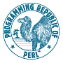

<body>
<!-- body -->
<center>
<a href="perlbug.cgi"></a>
<hr>
<h4>
Anyone may search the database via either the <a href="mailto:help@bugs.perl.org">email</a>
or the <a href="perlbug.cgi">web</a> interface.
</h4>
<hr>
<a href="perlbug.cgi?req=search"><h3>Enter BUG squashing arena!</h3></a>
<a href="_perlbug.cgi?req=search&target=_top&frames=no"><h5>No Frames version!</h5></a>
<h4>Or enter a quick search on just the subject line of submitted bugs which are still open:</h4>
<FORM name="index" method="post" action="perlbug.cgi">
<input type=hidden name=status value=open>
<input type=hidden name=trim value=35>
<input type=text name=subject value="perlbug">
<input type=hidden name=index value=yes>
<input type=submit name=req value=query>
<br> N.B. - Shortcuts to bugids if the text matches a bugid pattern <br>
</FORM>
<hr>
<!-- links -->
<table>
<tr>
<td><a href="perlbug.cgi?req=search">Search</a></td>
<td><a href="perlbug.cgi?req=webhelp">Help</a></td>
<td><a href="perlbug.cgi?req=spec">Spec</a></td>
<td><a href="perlbug.cgi?req=overview">Overview</a></td>
<td><a href="perlbug.cgi?req=administrators">Administrators</a></td>
<td><a href="perlbug.cgi?req=groups">Groups</a></td>
</tr>
<tr>
<td><a href="perlbug.cgi?req=date">Recent (7 days)</a></td>
</tr>
<tr>
<td><a href="http://www.perl.com">Perl ref</a></td>
<td><a href="archive/Perlbug.tar.gz">Perlbug source</a></td>
<td><a href="archive/Perlbug.sql.gz">Perlbug data</a></td>
<td><a href="mailto:help@bugs.perl.org">Email interface</a></td>
<td><a href="mailto:richard@perl.org">Maintainer</a></td>
<td><a href="http://public.activestate.com/cgi-bin/perlbrowse">perl repository browser</a></td>
<td><a href="perlbug.cgi?req=todo">Todo</a>)</td>
</tr>
<tr>
<td><a href="http://www.xray.mpe.mpg.de/mailing-lists/perl5-porters/">p5p archive</a></td>
<td colspan=2><a href="http://www.apache.org/">Powered by Apache</a></td>
<td><a href="http://www.mysql.com/">Driven by MySQL</a></td>
<td><a href="http://www.linux.org/">Hosted by Linux</a></td>
<td colspan=2><a href="http://www.perl.org/">Scriven in Perl</a></td>
</tr>
</table>
</center>
</body>